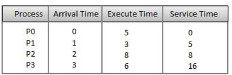
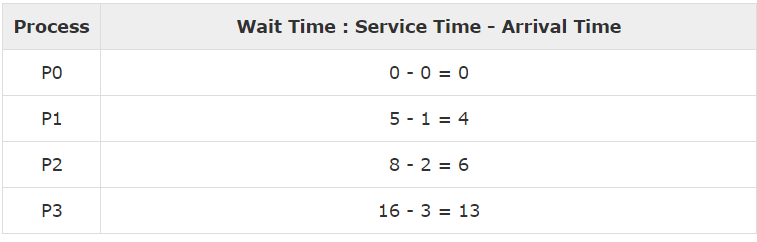

First Come First Serve
The simplest of all scheduling algorithms is nonpreemptive first-come first-served. With this algorithm, processes are assigned the CPU in the order they request it. Basically, there is a single queue of ready processes. When the first job enters the system from the outside in the morning, it is started immediately and allowed to run as long as it wants to. As other jobs come in, they are put onto the end of the queue. When the running process blocks, the first process on the queue is run next. When a blocked process becomes ready, like a newly arrived job, it is put on the end of the queue.- Jobs are executed on first come, first serve basis.
- It is a non-preemptive, pre-emptive scheduling algorithm.
- Easy to understand and implement.
- Its implementation is based on FIFO queue.
- Poor in performance as average wait time is high.


Average Wait Time : (0+4+6+13) / 4 = 5.75